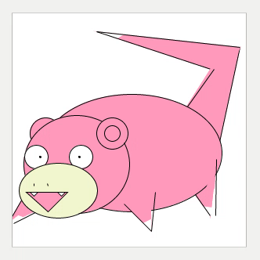

Анимация
В модели может быть несколько кадров. В процессе прогона отображается выбранный из списка. Описание кадра анимации имеет следующий вид:
frame Имя_кадра {
def init() {
блок_инициализации
}
def draw() {
тело_кадра
}
}
Блок инициализации
Используется для задания фона и размеров фрейма:
def init() {
background = new Background(800, 600, RaoColor.WHITE)
}
Тело кадра
В теле кадра, с помощью процедурного языка и специальных функций для отрисовки, описывается изображение.
| Сигнатура |
Описание |
Параметры |
new RaoColor(int r, int g, int b)
new RaoColor(int r, int g, int b, int alpha)
|
Создает цвет в модели RGB |
r |
интенсивность красного цвета в интервале от 0 до 255 |
g |
интенсивность зеленого цвета в интервале от 0 до 255 |
b |
интенсивность синего цвета от в интервале 0 до 255 |
alpha |
прозрачность в интервале от 0 до 255 |
| Встроенные цвета |
RaoColor.WHITE
RaoColor.BLUE
RaoColor.CYAN
RaoColor.GRAY
RaoColor.GREEN
RaoColor.MAGENTA
RaoColor.RED
RaoColor.YELLOW
|
RaoColor.BLACK
RaoColor.DARK_BLUE
RaoColor.DARK_CYAN
RaoColor.DARK_GRAY
RaoColor.DARK_GREEN
RaoColor.DARK_MAGENTA
RaoColor.DARK_RED
RaoColor.DARK_YELLOW
|
|
|
new Background(int width, int height, RaoColor color)
|
Определяет фона кадра. Должна вызываться в init(). |
width |
ширина кадра |
height |
высота кадра |
color |
цвет кадра |
|
drawText(String text, int x, int y)
drawText(String text, int x, int y,
RaoColor color)
drawText(String text, int x, int y,
RaoColor color, int width, Alignment alignment)
|
Выводит текст |
text |
текст |
x |
координата x верхнего левого угла панели текста |
y |
координата y верхнего левого угла панели текста |
color |
цвет текста |
width |
ширина панели текста, по которой производится выравнивание |
alignment |
выравнивание текста в панели, задается одним из значений Alignment.LEFT
Alignment.RIGHT
Alignment.CENTER
|
|
drawLine(int x1, int y1, int x2, int y2)
drawLine(int x1, int y1, int x2, int y2,
RaoColor color)
|
Выводит отрезок |
x1 |
координата x первой точки отрезка |
y1 |
координата y первой точки отрезка |
x2 |
координата x второй точки отрезка |
y2 |
координата y второй точки отрезка |
color |
цвет отрезка |
|
drawRectangle(int x, int y,
int width, int height)
drawRectangle(int x, int y,
int width, int height,
RaoColor fillColor,
RaoColor borderColor)
|
Выводит прямоугольник |
x |
координата x левой верхней точки прямоугольника |
y |
координата y левой верхней точки прямоугольника |
width |
ширина прямоугольника |
height |
высота прямоугольника |
fillColor |
цвет фона прямоугольника |
borderColor |
цвет границы прямоугольника |
|
drawTriangle(int x1, int y1,
int x2, int y2,
int x3, int y3)
drawTriangle(int x1, int y1,
int x2, int y2,
int x3, int y3,
RaoColor fillColor, RaoColor borderColor)
|
Выводит треугольник |
x1 |
координата x первой вершины треугольника |
y1 |
координата y первой вершины треугольника |
x2 |
координата x второй вершины треугольника |
y2 |
координата y второй вершины треугольника |
x3 |
координата x третьей вершины треугольника |
y3 |
координата y третьей вершины треугольника |
fillColor |
цвет фона треугольника |
borderColor |
цвет границы треугольника |
|
drawCircle(int x, int y, int radius)
drawCircle(int x, int y, int radius,
RaoColor fillColor, RaoColor borderColor)
|
Выводит круг |
x |
координата x центра круга |
y |
координата y центра круга |
radius |
радиус круга |
fillColor |
цвет фона круга |
borderColor |
цвет границы круга |
|
drawEllipse(int x, int y,
int width, int height)
drawEllipse(int x, int y,
int width, int height,
RaoColor fillColor, RaoColor borderColor)
|
Выводит эллипс |
x |
координата x левого верхнего угла прямоугольника, в который вписан эллипс |
y |
координата y левого верхнего угла прямоугольника, в который вписан эллипс |
width |
длина горизонтальной оси эллипса |
height |
длина вертикальной оси эллипса |
fillColor |
цвет фона эллипса |
borderColor |
цвет границы эллипса |
|
drawImage(String name,
int x, int y)
drawImage(String name,
int destX, int destY,
int destWidth, int destHeight)
drawImage(String name,
int srcX, int srcY,
int srcWidth, int srcHeight,
int destX, int destY,
int destWidth, int destHeight)
|
Выводит изображение |
name |
имя файла |
x |
координата x левого верхнего угла изображения |
y |
координата y левого верхнего угла изображения |
srcX
srcY
srcWidth
srcHeight |
часть исходного изображения |
destX
destY
destWidth
destHeight |
прямоугольная область на экране |
|
Пример
event Timer() {
Timer.plan(currentTime + 1);
}
def init() {
Timer.plan(currentTime + 1);
}
def terminateCondition() {
return currentTime > 200;
}
frame WhosThat {
def init() {
background = new Background(300, 300, RaoColor.WHITE);
}
def draw() {
val dy = Math.abs(4 - currentTime % 8) as int;
val dx = Math.abs(8 - currentTime % 16) as int;
val bodyColor = new RaoColor(255, 153, 188);
val mouthColor = new RaoColor(242, 245, 207);
/* tail */
drawTriangle(255 + dx, 170 + dy, 290, 40 + dy, 200, 150 + dy, bodyColor, bodyColor);
drawLine(255 + dx, 170 + dy, 290, 40 + dy, RaoColor.BLACK);
drawTriangle(100 + dx, 20 + dy, 290, 40 + dy, 275, 75 + dy, bodyColor, bodyColor);
drawTriangle(100 + dx, 20 + dy, 140, 24 + dy, 130, 30 + dy, RaoColor.WHITE, RaoColor.WHITE);
drawLine(100 + dx, 20 + dy, 290, 40 + dy, RaoColor.BLACK);
drawLine(100 + dx, 20 + dy, 265, 72 + dy, RaoColor.BLACK);
drawTriangle(250 + dx, 220 + dy, 270, 40 + dy, 200, 150 + dy, bodyColor, bodyColor);
drawLine(250 + dx, 68 + dy, 220, 120 + dy, RaoColor.BLACK);
/* right back leg */
drawTriangle(220 + dx, 220 + dy, 245 + dx, 255 + dy, 260, 183 + dy, bodyColor, bodyColor);
/* body */
drawEllipse(30 + dx, 100 + dy, 230, 150, bodyColor, RaoColor.BLACK);
/* right back leg partially-behind effect */
drawTriangle(240 + dx, 220 + dy, 245 + dx, 255 + dy, 260, 183 + dy, bodyColor, bodyColor);
drawTriangle(233 + dx, 243 + dy, 245 + dx, 255 + dy, 255, 245 + dy, RaoColor.WHITE, RaoColor.WHITE);
drawLine(226 + dx, 228 + dy, 245 + dx, 255 + dy, RaoColor.BLACK);
drawLine(245 + dx * 2, 255 + dy, 260, 183 + dy, RaoColor.BLACK);
/* left ear */
drawCircle(35 + dx, 150 + dy, 40, bodyColor, RaoColor.BLACK);
/* head */
drawEllipse(7 + dx, 127 + dy, 135, 125, bodyColor, RaoColor.BLACK);
/* right ear */
drawCircle(120 + dx, 150 + dy, 40, bodyColor, RaoColor.BLACK);
drawCircle(120 + dx, 150 + dy, 20, bodyColor, RaoColor.BLACK);
/* left eye */
drawCircle(23 + dx, 180 + dy, 30, RaoColor.WHITE, RaoColor.BLACK);
drawCircle(28 + dx, 180 + dy, 2, RaoColor.BLACK, RaoColor.BLACK);
/* right eye */
drawCircle(80 + dx, 180 + dy, 30, RaoColor.WHITE, RaoColor.BLACK);
drawCircle(78 + dx, 180 + dy, 2, RaoColor.BLACK, RaoColor.BLACK);
/* left front leg */
drawTriangle(10 + dx, 225 + dy, 1 - dx, 265 + dy, 80, 225 + dy, bodyColor, bodyColor);
drawTriangle(0 + dx, 255 + dy, 1 - dx, 265 + dy, 15, 258 + dy, RaoColor.WHITE, RaoColor.WHITE);
drawLine(10 + dx, 225 + dy, 1 - dx, 265 + dy, RaoColor.BLACK);
drawLine(1, 265 + dy, 80, 225 + dy, RaoColor.BLACK);
/* mouth area */
drawEllipse(1 + dx, 188 + dy, 100, 70, mouthColor, RaoColor.BLACK);
drawTriangle(10 + dx, 225 + dy, 45, 250 + dy, 70, 225 + dy, bodyColor, RaoColor.BLACK);
/* nose */
drawLine(20 + dx, 214 + dy, 27, 217 + dy, RaoColor.BLACK);
drawLine(38 + dx, 217 + dy, 44, 214 + dy, RaoColor.BLACK);
/* teeth */
drawTriangle(15 + dx, 225 + dy, 20 + dx, 230 + dy, 25 + dx, 225 + dy, RaoColor.WHITE, RaoColor.BLACK);
drawTriangle(50 + dx, 225 + dy, 55 + dx, 230 + dy, 60 + dx, 225 + dy, RaoColor.WHITE, RaoColor.BLACK);
/* right front leg */
drawTriangle(135 + dx, 240 + dy, 170 + dx, 275 + dy, 175, 225 + dy, bodyColor, bodyColor);
drawTriangle(159 + dx, 265 + dy, 170 + dx, 275 + dy, 176, 260 + dy, RaoColor.WHITE, RaoColor.WHITE);
drawLine(135 + dx, 240 + dy, 170 + dx, 275 + dy, RaoColor.BLACK);
drawLine(175 + dx, 225 + dy, 170 + dx, 275 + dy, RaoColor.BLACK);
}
}
